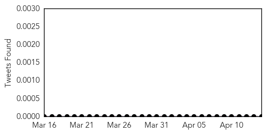
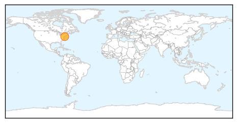
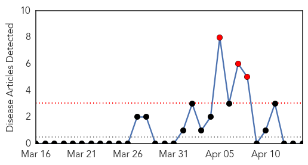

Mumps
30-Day Web Trend
4 alerts, 6 warnings
30-Day Twitter Trend
0 alerts, 0 warnings

Article Locations
Article Confidences

Top Articles:
Top Tweets:
-
No tweets found for Apr 14, 2014
Chikungunya
30-Day Web Trend
3 alerts, 0 warnings

30-Day Twitter Trend
1 alerts, 0 warnings

Article Locations

Article Confidences

Top Articles:
-
No articles found for Apr 14, 2014
Top Tweets:
-
No tweets found for Apr 14, 2014